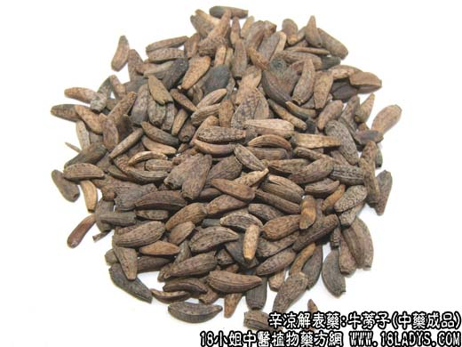
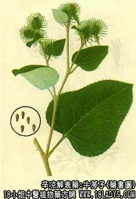

原文连接:https://www.daquan.com/post/2160.html



牛蒡子为常用中药，始载《名医别录》列为中品。原名恶实。
别名：牛子、大力子、鼠粘子。
来源：为菊科二年生草本牛蒡的成熟果实。栽培或野生。
植物形态：二年生草本。高1～1.5米，上部多分枝，基生叶丛生、茎生叶互生，叶大有长柄，叶片广卵形心脏形，长40～50厘米，宽30～40厘米。茎上部的叶逐渐变小，先端钝圆而具一小尖，边缘波状或齿牙状。表面绿色光滑，背面密生灰白色短绒毛。头状花序丛生于枝端呈伞房状。总苞呈线形，先端延长而成钩状针刺，向四方开散，成为带刺钩的圆球。子房下位，一室。瘦果略呈弯曲的长倒卵形，灰绿色。
产地：全国各地均产，以东北产量大，浙江桐乡产的称“杜大力”，质量佳。
性状鉴别：瘦果倒卵形，外皮褐色，有数条微突起的纵棱，表面可见紫黑色斑点。下端有一凹窝为国柄痕。外皮坚硬，易嗑开，破开后可见子叶两片，富油性。气微味苦。
以粒大饱满，灰褐色者为佳。
主要成分：含牛蒡甙，又含脂肪油20～30%。
功效与作用：1、利尿解热。2、抗菌；牛蒡子煎剂对肺炎双球菌等有较显著的抗菌作用。
炮制：炒用。
性味：辛、苦、寒。
归经：入肺、胃经。
功能：散风热，宣肺，透疹解毒。
主治：感冒风热，咳嗽，咽喉肿痛，斑疹不透，痈肿疮毒。
临床应用：牛蒡子具有疏散风热和解毒作用，尤其适宜以下两种情况。
1、风热而又咽喉肿痛（如咽炎、上呼吸道炎），配以荆芥、薄荷、桔梗、甘草等，有较好治疗作用，方如牛蒡汤。
2、风热而又便秘，即既有表症，又有里症（如流行性腮腺炎而又大便干结），用牛蒡子表里双解，颇为合适，因牛蒡子除能解表外，又富含油质，服后可以通便，即一般所谓“滑肠”。
此外，还可用于透疹治疗疮疡。
使用注意：凡泄泻、痘症虚寒、气血虚弱，都忌用牛蒡子；即使在风温表症需要辛凉疏散，但如表现有大便便溏者（大便不成形，水分多，排便次数多），也不要用。应改用薄荷、蝉蜕较合适。
用量：4.5～9g
处方举例：牛蒡汤（《证治准绳》）：牛蒡子6g，荆芥6g，薄荷3g（后下），防风6g，大黄3g，生甘草3g，水煎服。治感冒、咽喉肿痛。
注：牛蒡子的叶片、药材称大夫叶，有散风止痒，消炎解毒的效用。